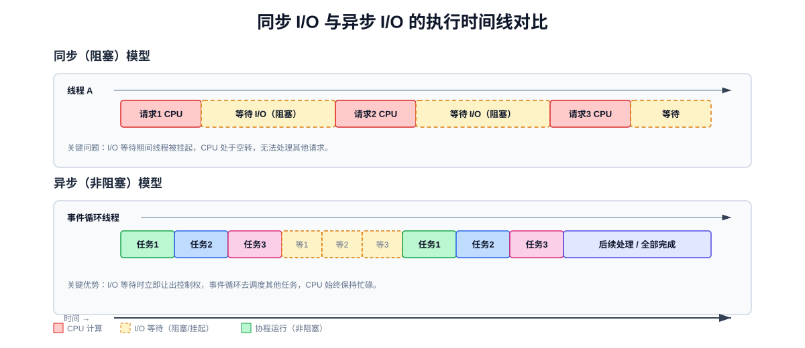
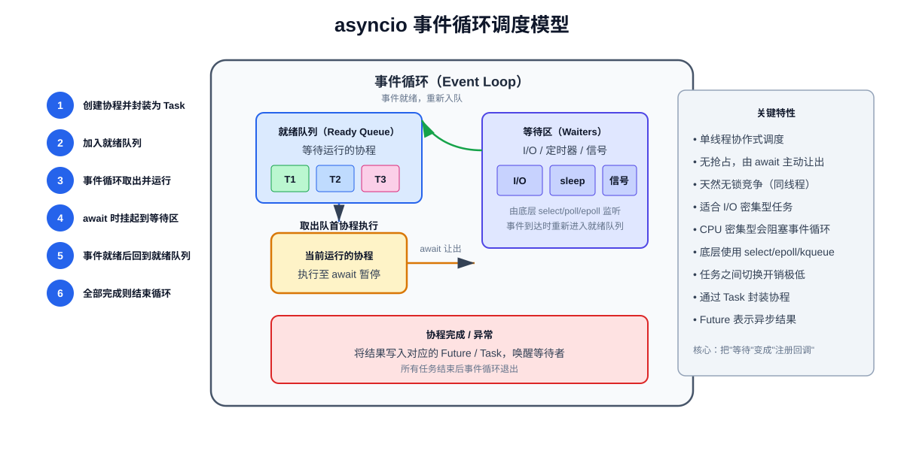
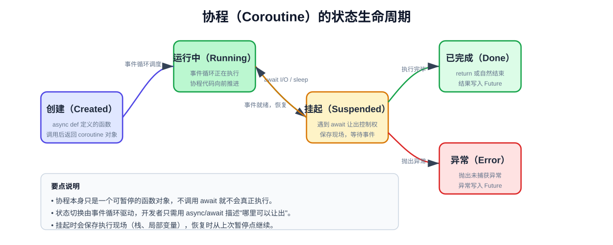
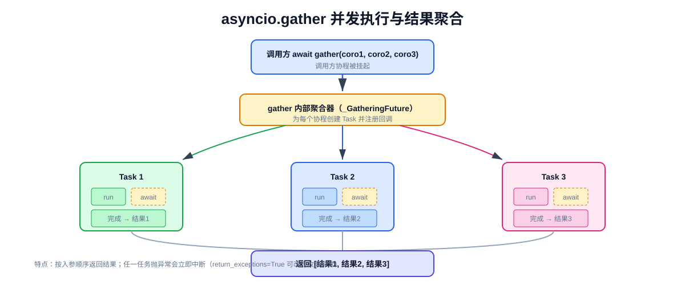

Python 异步编程：从原理到实战
Python 的
asyncio提供了一套基于事件循环的协作式并发框架。它用单线程 +async/await语法实现对 I/O 密集型任务的高效调度，是现代 Python 网络服务、爬虫、微服务的核心能力之一。
一、为什么需要异步编程
1.1 同步 I/O 的痛点
传统同步代码中，一次网络请求或文件读取会让当前线程阻塞挂起：CPU 无法执行其他任务，只能干等 I/O 完成。当并发量上来时，只能靠开更多线程弥补，但线程本身有内存开销（每个线程栈约几 MB），且线程切换需要内核介入，存在上下文切换成本。
import requests
import time
def fetch(url):
return requests.get(url) # 阻塞：直到 HTTP 响应返回
start = time.perf_counter()
for url in ["https://example.com"] * 5:
fetch(url)
print(f"串行耗时: {time.perf_counter() - start:.2f}s") # 约 5 个请求时间之和
1.2 三种并发模型对比
| 模型 | 实现方式 | 调度者 | 适用场景 | 主要开销 |
|---|---|---|---|---|
| 多进程 | multiprocessing |
操作系统（抢占式） | CPU 密集、需绕过 GIL | 进程创建、IPC、内存占用大 |
| 多线程 | threading |
操作系统（抢占式） | I/O 密集、需共享内存 | GIL 限制 CPU 并行、锁竞争 |
| 异步（协程） | asyncio |
事件循环（协作式） | 高并发 I/O 密集 | 任务切换极轻，无锁竞争 |
关键点：异步不是为了让单个任务变快，而是为了在等待 I/O 时去做别的事，从而提高整体吞吐量。
1.3 同步 vs 异步执行时间线

上图中，同步模型在 I/O 等待期间线程被挂起；异步模型则在等待时把控制权交还给事件循环，让其他任务继续运行。
二、核心概念
| 概念 | 英文 | 一句话解释 |
|---|---|---|
| 协程 | Coroutine | 可暂停、可恢复的函数，由 async def 定义 |
| 事件循环 | Event Loop | 驱动协程调度的核心引擎，单线程循环运行 |
| 任务 | Task | 对协程的封装，让它进入事件循环被调度 |
| Future | Future | 表示"尚未完成的异步结果"的容器 |
| 可等待对象 | Awaitable | 能被 await 的对象（协程、Task、Future） |
2.1 协程（Coroutine）
用 async def 定义的函数，调用它不会立即执行函数体，而是返回一个协程对象：
import asyncio
async def hello():
print("hello")
await asyncio.sleep(1)
print("world")
coro = hello() # <coroutine object hello at 0x...>，函数体尚未执行
print(type(coro)) # <class 'coroutine'>
直接调用协程对象而不 await 会触发 RuntimeWarning: coroutine 'hello' was never awaited。
2.2 事件循环（Event Loop）
事件循环是 asyncio 的心脏。它负责：
- 从就绪队列取出协程执行
- 在协程 await 时把它挂起，注册到底层 I/O 监听
- 当 I/O 事件就绪后把协程重新放回就绪队列
- 所有任务完成后退出

2.3 Task 与 Future 的关系
Future是底层抽象，表示"一个将来会有结果的对象"，有done()、result()、set_result()等方法。Task是Future的子类，专门用来包装协程并驱动它执行。- 通常开发者直接用
Task，很少直接操作Future。
import asyncio
async def main():
task = asyncio.create_task(asyncio.sleep(1))
print(isinstance(task, asyncio.Future)) # True
await task
asyncio.run(main())
三、asyncio 运行原理
3.1 协作式调度
asyncio 采用协作式（cooperative）而非抢占式调度：任务不会被操作系统强制中断，只有当任务执行到 await 时才主动让出控制权。
这意味着：如果一个协程里写了长时间的 CPU 计算（没有 await），它会阻塞整个事件循环，其他任务都无法运行。
async def bad_task():
# 危险：CPU 密集型计算，没有 await，会阻塞事件循环
total = 0
for i in range(10_000_000):
total += i
return total
3.2 底层 I/O 多路复用
事件循环底层使用操作系统的 I/O 多路复用机制：
- Linux: epoll
- macOS / BSD: kqueue
- Windows: IOCP（ProactorEventLoop）或 select
这些机制让单个线程可以同时监听成百上千个 socket，当其中任何一个就绪时再通知事件循环恢复对应的协程。
3.3 协程的状态生命周期

协程在 创建 → 运行中 → 挂起 → 运行中 → 完成/异常 之间切换，挂起时保存执行现场，恢复时继续。
四、基础语法
4.1 async def 与 await
import asyncio
async def greet(name: str) -> str:
await asyncio.sleep(0.5) # 模拟异步 I/O
return f"Hello, {name}"
async def main():
result = await greet("World") # 等待协程完成并拿到返回值
print(result)
asyncio.run(main())
4.2 asyncio.run
asyncio.run(coro) 是 Python 3.7+ 推荐的入口，它会：
1. 创建一个新的事件循环
2. 运行传入的协程直到完成
3. 关闭循环
import asyncio
async def main():
print("hello asyncio")
asyncio.run(main())
注意：
asyncio.run不能在已经有事件循环运行的环境中调用（如 Jupyter、FastAPI 内部），此时要用await main()或asyncio.get_running_loop()。
4.3 串行 await
多个 await 会串行执行，总耗时是各任务耗时之和：
import asyncio
import time
async def task(name, seconds):
await asyncio.sleep(seconds)
return f"{name} done"
async def main():
start = time.perf_counter()
a = await task("A", 1)
b = await task("B", 2)
print(a, b)
print(f"耗时: {time.perf_counter() - start:.2f}s") # 约 3s
asyncio.run(main())
五、并发执行
要让多个协程真正并发，必须先把它们调度起来（封装为 Task），再一起等待。
5.1 asyncio.gather
gather 是最常用的并发原语。它接收多个可等待对象，并发执行并按入参顺序返回结果列表：
import asyncio
import time
async def task(name, seconds):
await asyncio.sleep(seconds)
return f"{name} done"
async def main():
start = time.perf_counter()
results = await asyncio.gather(
task("A", 1),
task("B", 2),
task("C", 1),
)
print(results) # ['A done', 'B done', 'C done']
print(f"耗时: {time.perf_counter() - start:.2f}s") # 约 2s（取最大值）
asyncio.run(main())

异常处理：默认情况下，任一协程抛异常会导致 gather 立即抛出该异常。可通过 return_exceptions=True 把异常作为结果收集：
results = await asyncio.gather(coro1, coro2, return_exceptions=True)
# results 中可能包含 Exception 对象
5.2 asyncio.create_task
create_task 立即把协程封装成 Task 并调度执行，返回 Task 对象，之后可 await 它拿结果：
import asyncio
async def task(name, seconds):
await asyncio.sleep(seconds)
return f"{name} done"
async def main():
t1 = asyncio.create_task(task("A", 1))
t2 = asyncio.create_task(task("B", 2))
# 此时 t1、t2 已经在并发运行
print(await t1)
print(await t2)
asyncio.run(main())
重要：
create_task返回的 Task 如果没有被持有引用，可能被 GC 回收导致任务中断。务必保存引用（放进列表或字典）。
5.3 asyncio.as_completed
当你希望"哪个先完成就先处理哪个"时，用 as_completed：
import asyncio
async def task(name, seconds):
await asyncio.sleep(seconds)
return f"{name} done after {seconds}s"
async def main():
coros = [task("A", 3), task("B", 1), task("C", 2)]
for coro in asyncio.as_completed(coros):
result = await coro
print(result) # 输出顺序：B、C、A
asyncio.run(main())
5.4 asyncio.wait
wait 提供更细粒度的控制，可指定等待条件：
import asyncio
async def main():
tasks = [asyncio.create_task(asyncio.sleep(i)) for i in range(1, 4)]
# 等所有任务完成
done, pending = await asyncio.wait(tasks, return_when=asyncio.ALL_COMPLETED)
# 或等待任一完成
# done, pending = await asyncio.wait(tasks, return_when=asyncio.FIRST_COMPLETED)
asyncio.run(main())
5.5 四种并发方式对比
| 方式 | 结果顺序 | 异常行为 | 适用场景 |
|---|---|---|---|
gather |
按入参顺序 | 默认立即抛出 | 需要批量结果 |
create_task |
自行控制 | 需 await 时捕获 | 灵活调度、后台任务 |
as_completed |
完成顺序 | 需 await 时捕获 | 先到先处理 |
wait |
分 done/pending | 需从 Future 取 | 需要精细控制等待条件 |
六、异步 I/O 实战
6.1 asyncio.sleep 是异步的，但 time.sleep 不是
import asyncio
import time
async def main():
# asyncio.sleep 是非阻塞的，await 时事件循环去做别的事
await asyncio.sleep(1)
# time.sleep 会阻塞整个事件循环，绝不要在协程里用！
# time.sleep(1)
asyncio.run(main())
6.2 异步 HTTP：aiohttp
requests 是同步库，在协程中调用会阻塞事件循环。应使用 aiohttp：
import asyncio
import aiohttp
async def fetch(session, url):
async with session.get(url) as resp:
return await resp.text()
async def main():
urls = [
"https://example.com",
"https://httpbin.org/get",
"https://httpbin.org/status/200",
]
async with aiohttp.ClientSession() as session:
tasks = [fetch(session, url) for url in urls]
results = await asyncio.gather(*tasks)
for url, html in zip(urls, results):
print(f"{url}: {len(html)} bytes")
asyncio.run(main())
6.3 异步文件读写
Python 标准库的文件 I/O 是同步的。可使用 aiofiles 或把同步调用丢到线程池：
import asyncio
import aiofiles
async def main():
async with aiofiles.open("data.txt", mode="r") as f:
content = await f.read()
print(content)
asyncio.run(main())
6.4 把阻塞调用变成异步
对于无法改造的同步阻塞函数，用 asyncio.to_thread（Python 3.9+）或 loop.run_in_executor 丢到线程池：
import asyncio
import time
def blocking_io():
time.sleep(2) # 模拟阻塞 I/O
return "done"
async def main():
result = await asyncio.to_thread(blocking_io)
print(result)
asyncio.run(main())
七、同步原语
asyncio 提供了与 threading 类似的同步原语，但它们是协程级的，不会阻塞线程。
7.1 Lock：互斥锁
import asyncio
lock = asyncio.Lock()
async def critical_section(name):
async with lock:
print(f"{name} 进入临界区")
await asyncio.sleep(1)
print(f"{name} 离开临界区")
async def main():
await asyncio.gather(critical_section("A"), critical_section("B"))
asyncio.run(main())
7.2 Semaphore：信号量
控制并发数量，常用于限速（如爬虫并发数限制）：
import asyncio
sem = asyncio.Semaphore(3) # 最多 3 个并发
async def limited_task(name):
async with sem:
print(f"{name} 开始")
await asyncio.sleep(1)
print(f"{name} 结束")
async def main():
await asyncio.gather(*[limited_task(f"task-{i}") for i in range(10)])
asyncio.run(main())
7.3 Event：事件通知
import asyncio
async def waiter(event):
print("等待事件...")
await event.wait()
print("事件已触发！")
async def setter(event):
await asyncio.sleep(1)
event.set()
async def main():
event = asyncio.Event()
await asyncio.gather(waiter(event), setter(event))
asyncio.run(main())
7.4 Queue：生产者-消费者
import asyncio
async def producer(queue, n):
for i in range(n):
await queue.put(i)
print(f"生产: {i}")
await queue.put(None) # 哨兵值表示结束
async def consumer(queue):
while True:
item = await queue.get()
if item is None:
break
print(f"消费: {item}")
queue.task_done()
async def main():
queue = asyncio.Queue(maxsize=5)
await asyncio.gather(producer(queue, 10), consumer(queue))
asyncio.run(main())
八、完整案例：异步网页爬虫
8.1 需求
并发抓取多个网页，限制并发数，收集失败的 URL，最后输出统计。
8.2 实现
import asyncio
import aiohttp
from typing import List, Tuple
async def fetch(
session: aiohttp.ClientSession,
url: str,
sem: asyncio.Semaphore,
) -> Tuple[str, int, str]:
"""抓取单个 URL，返回 (url, 状态码, 内容长度或错误信息)"""
async with sem:
try:
async with session.get(url, timeout=aiohttp.ClientTimeout(total=10)) as resp:
text = await resp.text()
return url, resp.status, str(len(text))
except Exception as e:
return url, 0, str(e)
async def crawl(urls: List[str], max_concurrent: int = 5):
sem = asyncio.Semaphore(max_concurrent)
async with aiohttp.ClientSession() as session:
tasks = [fetch(session, url, sem) for url in urls]
results = await asyncio.gather(*tasks)
success = [(u, s, l) for u, s, l in results if s == 200]
failed = [(u, s, l) for u, s, l in results if s != 200]
print(f"成功: {len(success)}, 失败: {len(failed)}")
for u, s, l in failed:
print(f" 失败 URL: {u} (status={s}, error={l})")
return results
async def main():
urls = [
"https://example.com",
"https://httpbin.org/get",
"https://httpbin.org/status/404",
"https://httpbin.org/delay/2",
"https://nonexistent.invalid",
]
await crawl(urls, max_concurrent=3)
asyncio.run(main())
8.3 关键设计点
| 设计点 | 说明 |
|---|---|
Semaphore 限制并发 |
避免对目标服务器造成过大压力 |
gather 收集结果 |
一次性拿到所有抓取结果 |
| 异常捕获而非抛出 | 单个 URL 失败不影响整体 |
ClientSession 复用 |
复用 TCP 连接池，提升性能 |
九、常见陷阱
9.1 在协程中调用同步阻塞函数
import requests
async def bad():
# 错误：requests.get 会阻塞事件循环
resp = requests.get("https://example.com")
解决：用 aiohttp，或 asyncio.to_thread(requests.get, url)。
9.2 创建了 Task 但不 await，也不保存引用
async def bad():
asyncio.create_task(asyncio.sleep(1)) # 可能被 GC 回收
# 没有保存引用，任务可能在完成前被回收
解决：用列表保存所有 Task 引用。
9.3 忘记 await 协程
async def bad():
asyncio.sleep(1) # 返回协程对象但未 await，不会执行
解决：始终 await 协程，或用 create_task 调度。
9.4 在事件循环外调用异步函数
async def foo(): ...
foo() # 只创建协程对象，不执行
解决：用 asyncio.run(foo()) 启动。
9.5 混用同步 I/O 与异步代码
标准库的 open、requests.get、time.sleep 等都是同步的。在协程中使用它们会阻塞事件循环。
9.6 异常处理不当
Task 中的异常如果没有被 await 捕获，会在 Task 被 GC 时打印 Task exception was never retrieved 警告。务必 await 或调用 task.add_done_callback 处理。
十、面试高频问答
Q1：asyncio 是单线程还是多线程？
asyncio 本身是单线程的。事件循环在一个线程中运行，通过协作式调度在多个协程间切换。但可以通过 asyncio.to_thread 或 run_in_executor 把阻塞操作放到线程池/进程池执行。
Q2：asyncio 适合什么场景？不适合什么场景？
- 适合：I/O 密集型任务（网络请求、数据库查询、文件读写）、高并发连接（Web 服务器、爬虫、消息队列消费者）。
- 不适合：CPU 密集型任务（大量计算、图像处理），此时协程无法并行，应使用多进程。
Q3：asyncio.sleep 和 time.sleep 有什么区别？
asyncio.sleep是异步的，await时把控制权还给事件循环，不阻塞线程。time.sleep是同步的，会阻塞当前线程（即整个事件循环线程），绝不能在协程中使用。
Q4：Task 和 Future 的关系？
Task 继承自 Future。Future 表示"未来会有结果"的抽象容器；Task 专门用于包装协程并调度它运行。日常开发用 Task，很少直接用 Future。
Q5：如何处理异步中的异常？
- 协程内部
try/except捕获。 gather默认任一异常会向外抛，可用return_exceptions=True收集。Task的异常需在await task时捕获，否则用add_done_callback检查。
Q6：如何限制并发数？
用 asyncio.Semaphore(n) 作为异步上下文管理器，或用 asyncio.Queue + 固定数量消费者协程。
Q7：asyncio 中的锁和 threading.Lock 有什么区别？
asyncio 的 Lock 是协程级的，await lock.acquire() 时不会阻塞线程，而是挂起当前协程。threading.Lock 会阻塞线程，不能在协程中使用。
Q8：为什么 asyncio 是协作式而非抢占式？
协作式调度由协程主动通过 await 让出控制权，切换开销极低且无需锁。代价是如果协程不主动让出（CPU 密集），会阻塞整个循环。抢占式由操作系统调度，可并行利用多核但有上下文切换开销和锁竞争。
附录 A：常用 API 速查表
| API | 作用 |
|---|---|
asyncio.run(coro) |
创建并运行事件循环，执行协程 |
asyncio.create_task(coro) |
创建 Task 并调度 |
asyncio.gather(*aws) |
并发执行，按序返回结果 |
asyncio.as_completed(aws) |
按完成顺序迭代 |
asyncio.wait(aws) |
精细控制等待条件 |
asyncio.sleep(delay) |
异步休眠 |
asyncio.wait_for(aw, timeout) |
带超时等待 |
asyncio.shield(aw) |
保护协程不被取消 |
asyncio.to_thread(func, *args) |
在线程池中执行同步函数 |
asyncio.Lock() |
互斥锁 |
asyncio.Semaphore(n) |
信号量（限并发） |
asyncio.Event() |
事件通知 |
asyncio.Condition() |
条件变量 |
asyncio.Queue() |
协程安全队列 |
asyncio.run_coroutine_threadsafe(coro, loop) |
跨线程提交协程 |
附录 B：关键概念术语对照表
| 中文 | 英文 | 说明 |
|---|---|---|
| 协程 | Coroutine | 可暂停恢复的函数 |
| 事件循环 | Event Loop | 驱动协程调度的引擎 |
| 任务 | Task | 协程的调度封装 |
| 未来对象 | Future | 异步结果的容器 |
| 可等待对象 | Awaitable | 可被 await 的对象 |
| 协作式调度 | Cooperative Scheduling | 任务主动让出控制权 |
| 抢占式调度 | Preemptive Scheduling | 操作系统强制中断切换 |
| I/O 多路复用 | I/O Multiplexing | 单线程监听多个 I/O 事件 |
| 挂起 | Suspend | 协程暂停执行并保存现场 |
| 恢复 | Resume | 协程从挂起点继续执行 |